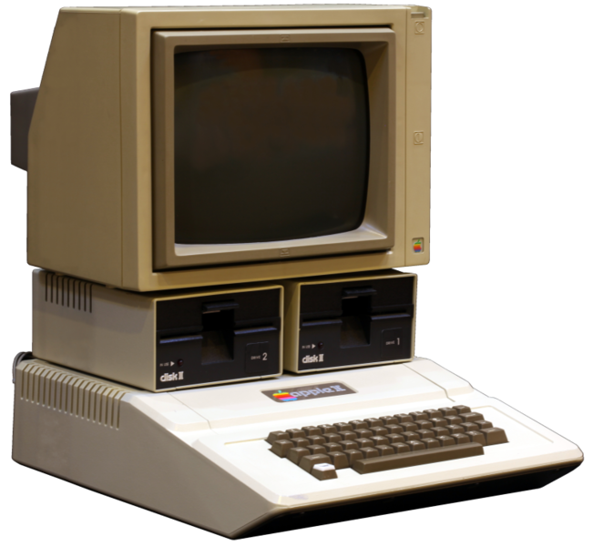

The apple ][ is an 8-bit home computer, one of the first highly successful mass-produced microcomputer products,[2] designed primarily by Steve Wozniak, manufactured by Apple Computer

Technical Specifications
| Manufacturer | Apple Computer, Inc. |
| Price | $1,298 for 4kB, $2,638 for 64kB |
| Operating System | Integer BASIC |
| CPU | MOS Technology 6502 |
| Memory | 4KB, 8KB, 12KB, 16KB, 20KB, 24KB, 32KB, 36KB, 48KB, or 64KB |
| Storage | Audio Cassette |
| Display | NTSC video out (built-in RCA connector) |
| Graphics | Lo-res (40x48, 16-color), Hi-res (280x192, 6-color) |
| Sound | 1-bit speaker (built-in), 1-bit cassette input (built-in microphone jack), 1-bit cassette output (built-in headphone jack) |
| Input | Upper-case keyboard, 52 keys |
| Controller Input | Paddles |
| Connectivity | Parallel port card, Serial Post card, SCSCI |